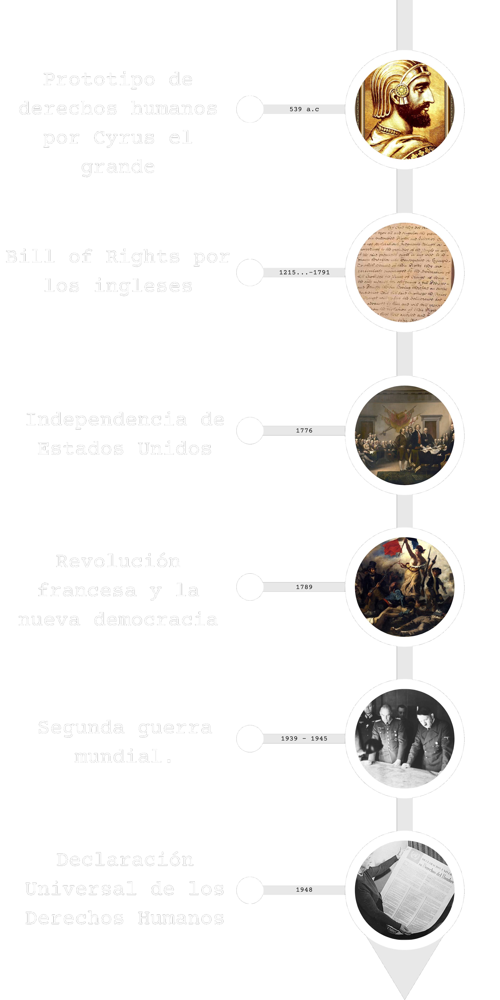

Conceptos
CONCEPTOS A SABER
Definiciones que usaremos:
Segun la RAE:
def13 Derecho: Conjunto de principios y normas, expresivos de una idea de justicia y de orden, que regulan las relaciones humanas en toda sociedad y cuya observancia puede ser impuesta de manera coactiva.
def1 Humano: Dicho de un ser: Que tiene naturaleza de hombre (‖ ser racional). U. t. c. s., frec. m. pl. para referirse al conjunto de los hombres. Era hijo de un extraterrestre y una humana. El lenguaje de los humanos.
def13 Derecho: Conjunto de principios y normas, expresivos de una idea de justicia y de orden, que regulan las relaciones humanas en toda sociedad y cuya observancia puede ser impuesta de manera coactiva.
def1 Humano: Dicho de un ser: Que tiene naturaleza de hombre (‖ ser racional). U. t. c. s., frec. m. pl. para referirse al conjunto de los hombres. Era hijo de un extraterrestre y una humana. El lenguaje de los humanos.
Historia
" Todos los seres humanos, sea cual sea su cultura o pasado histórico, sufren cuando son intimidados, encarcelados o torturados. Debemos, por tanto, insistir en un consenso global, no solo por la necesidad de respetar los derechos humanos en todo el mundo, sino también por la definición de esos derechos, porque es inherente en todos los seres humanos anhelar la libertad, igualdad y dignidad."
-Dalai Lama-
Cyrus el Grande, después de haber conquistado la ciudad de Babilonia, en el año 539 a.c, liberó a todos los esclavos, además dio libertad de religión, sea cual fuera su origen. Estas palabras fueron grabadas en el ahora conocido Cilindro de Cyrus. Estas ideas se expandieron por la tierra. Los hombres seguían naturalmente estas reglas, por ello las llamaban leyes naturales antes bien, las personas en el poder no respetaban obligatoriamente estas leyes. En 1689, se firmó la declaración de los derechos en Inglaterra. A continuación a este suceso, en 1776, en Estados Unidos, acompañado con su independencia, y en 1789, con la revolución francesa se impusieron ciertos derechos, los cuales llamaron Derechos Naturales. Después de la derrota de Napoleon, la coalición de países europeos creó una lista de derechos básicos,los cuales parecían solo respetarse en Europa. Hasta que un dia Mahatma Ghandi logro hacer valer los derechos en india, hasta su independencia en 1947. Después del olocausto de Hitler, y de su derrota, la recién creada Organización de las Naciones Unidas, creó, bajo la supervisión de Eleonor Roosvelt, la Declaración Universal de los Derechos Humanos, los cuales siguen evolucionando hasta hoy para adaptarse a los cambios del mundo.

Declaracion Universal los Derechos Humanos
" No se puede matar la verdad. No se puede matar la justicia. No se puede matar aquello por lo que luchamos"
-Jean Dominique-
La ONU (organización de naciones unidas) fue impuesta el 1 de diciembre de 1948, en consecuencia de los “Actos de Barbarie Ultrajante para la Conciencia Humana”. En el 46, Comisión de Derechos Humanos es creada con el objetivo de imponer ciertos aspectos mínimos a los derechos de las personas. Entre los miembros más importantes está Eleanor Roosevelt , la que aparece en la imagen aquí abajo sosteniendo la declaración de los derechos humanos. La Comisión de los Derechos Humanos fue en primeras instancias formada por miembros de Estados Unidos, China y Líbano, pero después miembros de otras nacionalidades fueron autorizados a unirse, por ejemplo franceses. En fin, el 10 de diciembre del año 1948 se firmó el acta de la Declaración Universal de los Derechos Humanos. 8 naciones se abstuvieron de votar, pero ninguna se opuso.
Actualidad
"Vivimos en una sociedad profundamente dependiente de la ciencia y la tecnología y en la que nadie sabe nada de estos temas. Ello constituye una fórmula segura para el desastre"
-Carl Sagan-
En la actualidad los derechos humanos son altamente respetados. Sin embargo, siguen habiendo países que no los respetan y hay hasta en países desarrollados personas que, a escondidas de la ley, violan los derechos humanos y explotan a las personas de diferentes maneras. Tristemente, en estos casos se hace poco caso o hasta caso omiso y se le presta más atención usar los derechos humanos para empoderar minorías las ya no necesitan de ese apoyo debido a que ya son tratadas con igualdad en los países donde supuestamente exigen sus derechos. Afortunadamente, en muchos países donde se violan los derechos humanos constantemente hay personas que intentan hacerlos valer hasta con su vida y creen realmente en esa causa.
Liceo Francés de El Salvador
19/05/2023